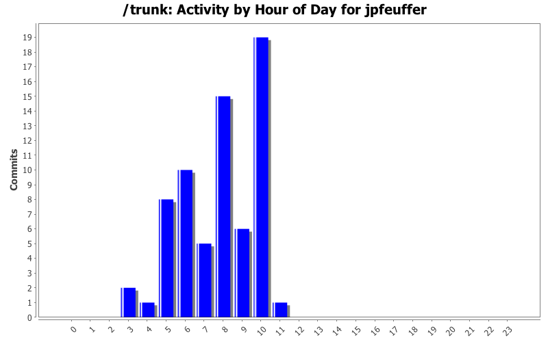
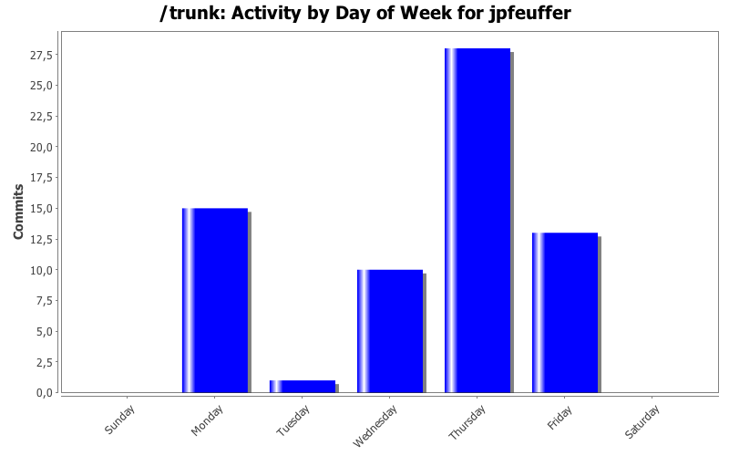
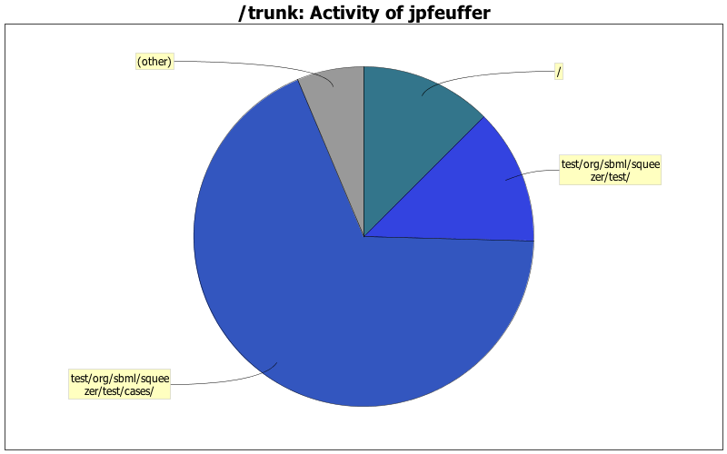

| Directory | Changes | Lines of Code | Lines per Change |
|---|---|---|---|
| Totals | 67 (100.0%) | 2080 (100.0%) | 31.0 |
| test/org/sbml/squeezer/test/cases/ | 30 (44.8%) | 1421 (68.3%) | 47.3 |
| test/org/sbml/squeezer/test/ | 11 (16.4%) | 268 (12.9%) | 24.3 |
| / | 3 (4.5%) | 260 (12.5%) | 86.6 |
| test/org/sbml/squeezer/test/data/ | 1 (1.5%) | 52 (2.5%) | 52.0 |
| files/Hiwi-Arbeitszeit/ | 18 (26.9%) | 39 (1.9%) | 2.1 |
| src/org/sbml/squeezer/ | 2 (3.0%) | 38 (1.8%) | 19.0 |
| src/org/sbml/squeezer/kinetics/ | 1 (1.5%) | 2 (0.1%) | 2.0 |
| files/tests/ | 1 (1.5%) | 0 (0.0%) | 0.0 |

Arbeitszeit
0 lines of code changed in 1 file:
Added comments, sorted tests, added some new ones.
200 lines of code changed in 6 files:
Had to revert everything, since everything was done before and conflicts couldn't be resolved. Files were not up to date.
0 lines of code changed in 1 file:
Added new Tests. Added comments. Added unit tests. Added abstract class for saving LOC.
0 lines of code changed in 1 file:
Arbeitszeit
0 lines of code changed in 3 files:
First build script sketch. From KEGGtranslator build.xml.
240 lines of code changed in 1 file:
Arbeitszeit
0 lines of code changed in 1 file:
Added new tests and comments.
300 lines of code changed in 4 files:
Set properties
2 lines of code changed in 1 file:
Tests for ReversibleKinetics Interface.
98 lines of code changed in 1 file:
Working hours. First attempts to create an ant-script that automatically runs the test. Very complicated due to dozens of dependencies. Could not implement further tests since NOTHING WORKS after an update. Have to meet with Andreas.
2 lines of code changed in 2 files:
Added some more ConvenienceKinetic Tests.
Tested some more BioModels.
66 lines of code changed in 1 file:
Added ConvenienceKinetics Tests for (at first) UniUniKinetics.
79 lines of code changed in 3 files:
Commit from yesterday and today.
Added all kinds of ModularRateLaws.
124 lines of code changed in 3 files:
5 lines of code changed in 1 file:
Arbeitszeit
0 lines of code changed in 1 file:
Added ZeroProd/ReacKinetics Tests.
Added some tested GMLs to the other ones.
225 lines of code changed in 4 files:
Arbeitszeit
10 lines of code changed in 2 files:
Added a comment. Have to ask Andreas if there has to be changed sth.
2 lines of code changed in 1 file:
Added new Equations to UniUni.
Added BiBi tests for CM.
147 lines of code changed in 3 files:
(16 more)